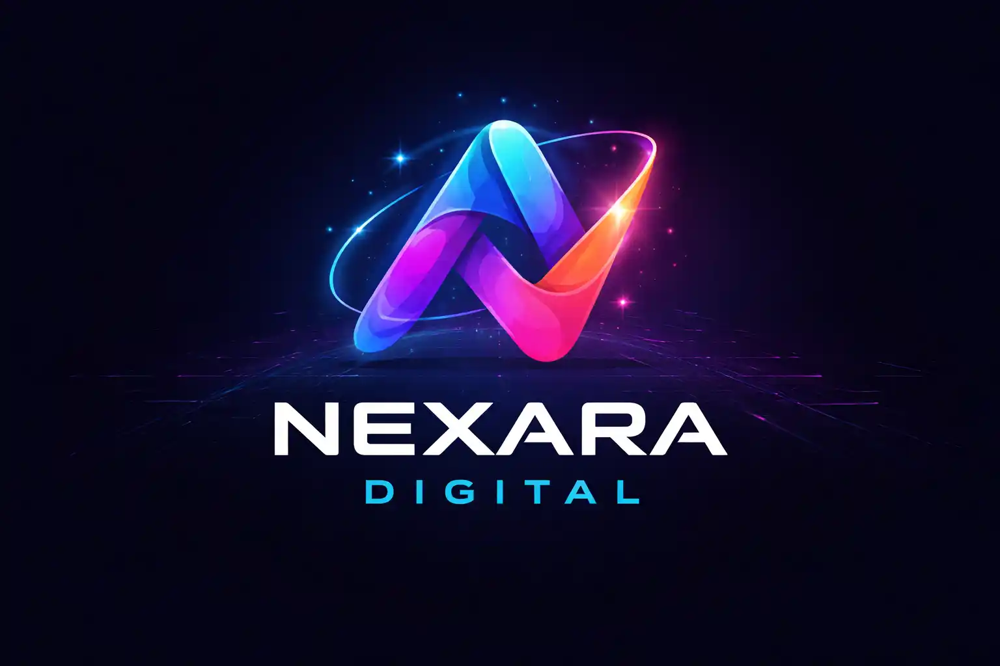
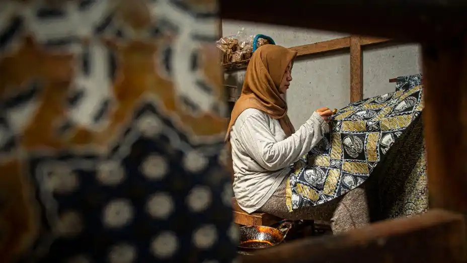
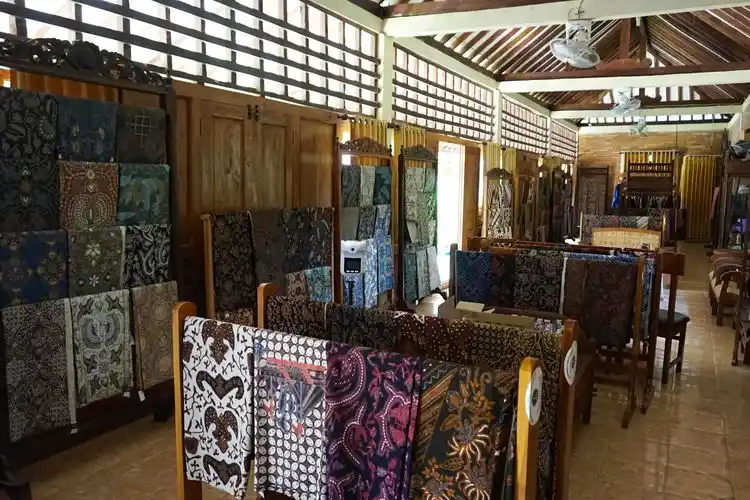

Nexara Digital membantu brand dan UMKM menghadirkan aktivitas bisnis yang terhubung dengan kehadiran digital di Google dan berbagai platform.
Nexara Digital berfokus pada bagaimana sebuah bisnis hadir secara nyata, kemudian terhubung dengan dunia digital. Aktivitas yang dilakukan di lapangan tidak berhenti sebagai operasional, tetapi menjadi bagian dari sistem yang membangun kredibilitas dan visibilitas.
Pendekatan yang digunakan Nexara Digital mengacu pada sistem berbasis aktivitas nyata yang terhubung dengan visibilitas digital. Penjelasan lebih lanjut mengenai metode ini dapat dilihat melalui G-Loop Method .
Kegiatan bisnis yang berlangsung langsung di lokasi sebagai fondasi utama.
Aktivitas direkam menjadi konten visual yang merepresentasikan bisnis secara real.
Konten terhubung dengan Google Maps dan platform digital lainnya.

Kegiatan operasional harian yang berlangsung secara langsung di lokasi.
Momen interaksi yang menjadi bagian dari pengalaman bisnis.

Visual yang terhubung dengan keberadaan bisnis di Google Maps.
Aktivitas yang dilakukan secara konsisten membentuk jejak digital yang terhubung dengan pencarian Google. Hal ini membantu bisnis lebih mudah ditemukan, dipercaya, dan dikenali oleh calon pelanggan.
Pembahasan utama tentang bagaimana UMKM membangun kehadiran digital.
Baca ArtikelMulai dari aktivitas nyata yang terhubung dengan visibilitas digital.
Hubungi Nexara Digital